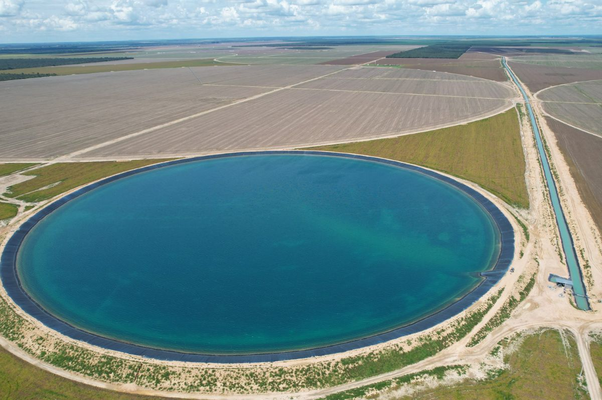

Energías Limpias
Las energías limpias como la solar, eólica e hidroeléctrica son fundamentales para reducir la contaminación del planeta. Estas fuentes de energía no emiten gases contaminantes y ayudan a combatir el cambio climático.
|
Empresa de Generación Huallaga S.A.: 100% ENERGÍA LIMPIA PARA EL PERÚ En el corazón del Perú la generación de energía nunca se detiene. Se genera energía limpia con altos estándares de calidad, profesionalismo, protección ambiental y responsabilidad social con nuestro entorno. 100% Energía limpia para el Perú. |


| EL PODER DEL AGUA | DESCRIPCIÓN | HACER CLIC EN IMAGEN |
|---|---|---|
| Mini centrales | Centrales pequeñas para comunidades locales. | |
| Represas inteligentes | Control automatizado para generar electricidad de forma eficiente. |  |
| Centrales Hidroeléctricas Industriales | Plantas grandes que proveen energía a ciudades o industrias. |